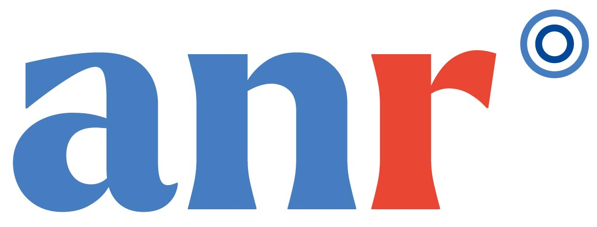
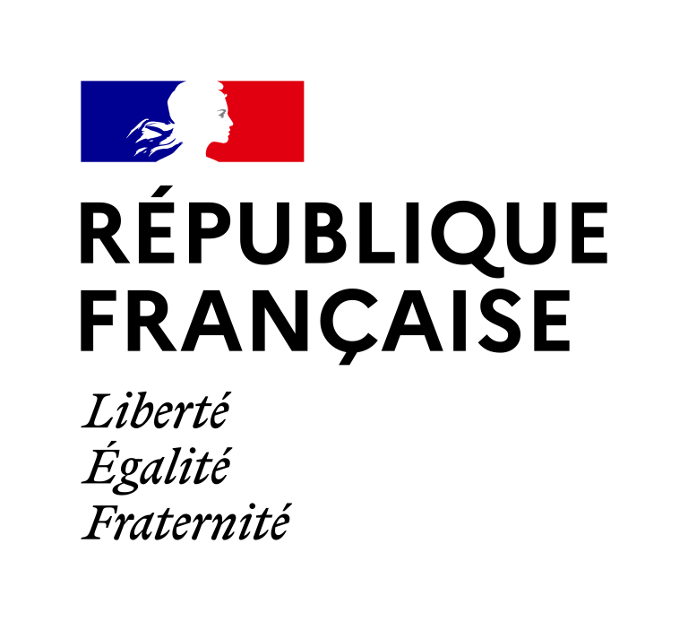
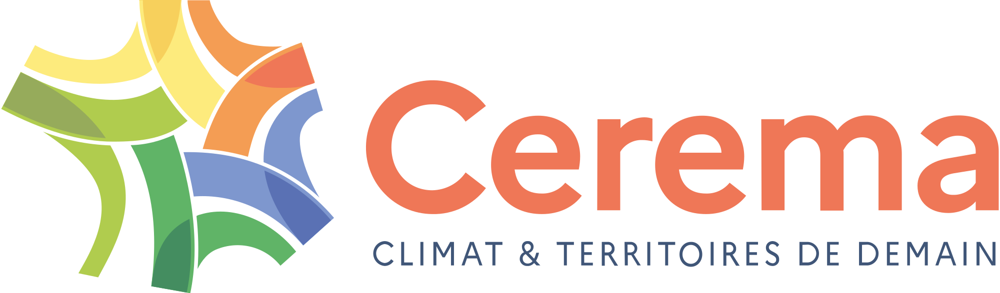
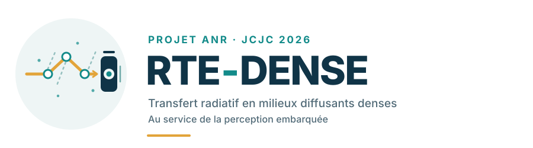

Solve radiative transfer
Develop and compare methods for solving the radiative transfer equation that are suited to dense scattering media.
Numerical methods


ANR JCJC project · 2026 AAPG call
RTE-DENSE aims to improve the solution of radiative transfer to simulate sensor perception, with dense fog as the priority case study.

Light · medium · sensor
The scientific challenge
In dense scattering media, multiple interactions between light and the medium make simulation of the signals received by sensors particularly computationally expensive. The project uses dense fog as its priority case study.
RTE-DENSE aims to develop methods for solving the radiative transfer equation, explore physics-guided acceleration, and compare simulations with experimental acquisitions. The main demonstrator focuses on a camera sensor.
Three complementary objectives
The project brings together physical modelling, efficient computation, and experimental validation.
Develop and compare methods for solving the radiative transfer equation that are suited to dense scattering media.
Numerical methodsExplore physics-guided artificial intelligence acceleration while preserving radiometric fidelity.
Physics-guided AIEstablish cross-validation using acquisitions in the PAVIN facility and physical and perceptual metrics.
Simulation · measurementAn integrated approach
RTE-DENSE is structured around three research work packages and one cross-cutting package dedicated to coordination, integration, and dissemination.
WP0 Coordination, cross-cutting management, integration, and dissemination.
Develop and compare solution schemes adapted to dense-fog regimes.
Reduce computation time without compromising the radiometric fidelity of the results.
Compare the methods developed with acquisitions in the PAVIN facility using physical and perceptual metrics.
Validation under controlled conditions
WP3 plans acquisitions in the PAVIN facility, which reproduces rain and fog conditions, followed by a cross-comparison with simulations using physical and perceptual metrics.
Would you like to arrange trials or make a specific request related to PAVIN? Email adweather@cerema.fr.
Simulation framework
SWEET is Cerema’s simulator for simulating perceptual sensors in adverse weather conditions. The project plans to develop and evaluate new simulation methods for dense scattering media in SWEET, as well as physics-guided accelerators.
SWEET-related publications on HALA workflow combining physical models, sensor simulation and experimental trials.
We are hiring
Two Cerema positions are open in Clermont-Ferrand.
A PhD focused on radiative transfer simulation methods in dense fog, as part of WP1.
View the PhD positionA postdoctoral position focused on methods for accelerating radiative transfer simulations, as part of WP2.
View the postdoctoral positionScientific coordination
RTE-DENSE is coordinated by Amine Ben Daoued, a research scientist at Cerema, within the Intelligent Transport Systems (STI) team at the Clermont-Ferrand office.
For any information request or to get in touch: amine.ben-daoued@cerema.fr.
ANR JCJC project · 2026 AAPG call
Advanced solution of the radiative transfer equation for dense scattering media in support of embedded perception.